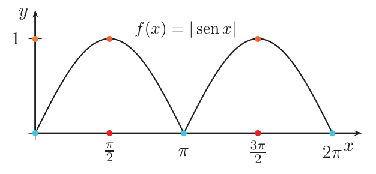
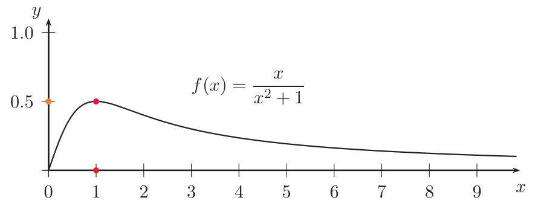
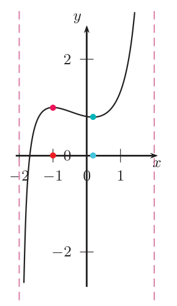
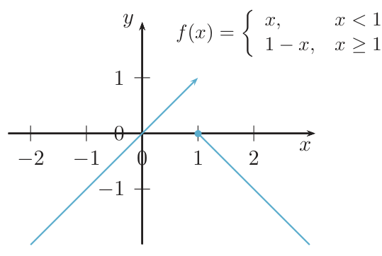
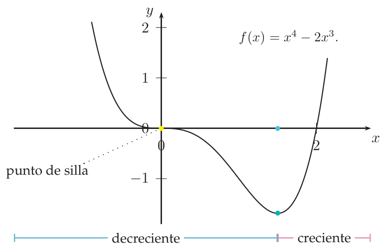
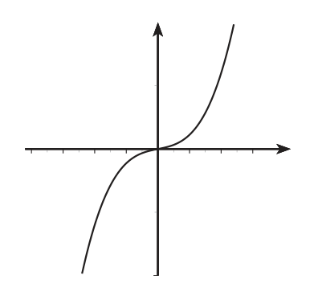

Optimización. Extremos relativos y absolutos
Cómo encontrar el mayor y el menor valor de una función, cómo decidir si un punto crítico es máximo, mínimo o ninguno de los dos, y cómo aplicarlo a problemas de «hacer algo lo más grande (o barato) posible».
0Antes de empezar U p.125
Todos buscamos «lo máximo con lo mínimo»: la caja de más volumen con una lámina dada, la lata que gasta menos chapa, el instante de máxima velocidad. Matemáticamente: dada una función, encontrar dónde alcanza su valor más grande o más pequeño. La derivada da la pista: en lo alto de una colina (o en el fondo de un valle) la tangente es horizontal, o hay un «pico» donde ni siquiera hay tangente. Esos son los puntos críticos, los únicos sospechosos.
U p.125Qué necesitas saber ya U §2.2-2.3, pp.52, 98
- Derivar y resolver $f'(x)=0$ (reglas de derivación, Tema 2).
- Crecimiento y decrecimiento: $f'>0\Rightarrow f$ estrictamente creciente; $f'<0\Rightarrow$ estrictamente decreciente (Prop. 2.4, p. 98).
- Límites en $\pm\infty$ y L'Hôpital (para intervalos no acotados), §2.3.
- Una función continua en un intervalo cerrado y acotado alcanza máximo y mínimo (Weierstrass, Prop. 1.15, p. 52).
Mapa del tema
| Apartado | Qué contiene | Dónde está |
|---|---|---|
| 1 Extremos absolutos | Def. 3.4-3.5, Weierstrass, Prop. 3.4, método del intervalo cerrado, intervalos abiertos | U pp.125-129 |
| 2 Extremos relativos | Def. 3.6, Ej. 3.22, aviso del borde, Prop. 3.5-3.8, Ej. 3.23-3.24, punto de silla | U pp.130-133 |
| 3 Optimización | receta con restricción, Ej. 3.25-3.26 | U pp.132-134 |
| 4 Ejercicios de E | 3.29-3.38 y 3.44, de fácil a difícil | E pp.114-127 |
| 5 Ejemplos propios | 4 ejemplos | propio |
| 6 Examen | 8 problemas de X | X |
| 7 Chuleta y comprobación | fórmulas, errores, lista | síntesis |
Qué se pide en los ejercicios y en el examen
(A) Extremos en un intervalo cerrado: lista de candidatos, tabla de valores (E 3.32-3.33; X feb. 2010, Electrónica s/f). (B) Clasificar puntos críticos con la 1.ª o la 2.ª derivada, o con derivadas de orden superior (E 3.29-3.31, 3.36, 3.44; X Examen 5). (C) Casos con valor absoluto o raíz, donde no hay derivada (E 3.34-3.35). (D) Problemas de optimización: «dos números con suma fija y producto máximo», cajas, rectángulos (E 3.37-3.38; X sep. 2017, feb. 2018). (E) Preguntas teóricas: «¿alcanza máximo y mínimo?» (Weierstrass). Los ejercicios E 3.39-3.43, 3.45-3.48 (concavidad, inflexión, representación gráfica) son de 3.5 y se verán en 3.5.
1Extremos absolutos y puntos críticos U pp.125-129
Imagina la gráfica como un perfil de montaña recorrido por un excursionista. El máximo absoluto es la cumbre más alta de todo el recorrido; el mínimo absoluto, el punto más bajo. Una función continua sobre un tramo con principio y final (un intervalo cerrado) no puede evitar tener un punto más alto y uno más bajo: no hay huecos por los que «escaparse». Si el recorrido no tiene final (intervalo infinito) o no incluye sus extremos (abierto), la cima puede quedar «fuera» y no existir.
P$f:D\to\mathbb R$ tiene un mínimo absoluto en $c$ si $f(c)\le f(x)$ para todo $x\in D$; tiene un máximo absoluto en $c$ si $f(c)\ge f(x)$ para todo $x\in D$. Un extremo absoluto es un máximo o un mínimo absoluto.
U p.126El máximo se alcanza en un punto $x=c$ (eje horizontal) y vale $f(c)$ (eje vertical). Si te piden «los extremos», da ambos. Además, un mismo valor extremo puede alcanzarse en varios puntos.
U pp.127-128Si $f$ es continua en $[a,b]$, existen $c,d\in[a,b]$ con $f(c)\le f(x)\le f(d)$ para todo $x\in[a,b]$: $f$ alcanza un mínimo y un máximo absolutos. Garantiza que existen; no dice dónde están.
U p.52 S p.275 L p.162El punto $c\in(a,b)$ es un punto crítico de la función continua $f:[a,b]\to\mathbb R$ si $f'(c)=0$ o $f$ no es derivable en $c$.
U p.126 L p.164Los extremos absolutos de una función continua $f:[a,b]\to\mathbb R$ se alcanzan en los extremos del intervalo ($a$ o $b$) o en los puntos críticos de $f$.
La continuidad es esencial: $f(x)=1/x$ si $x\ne0$, $f(0)=0$, en $[-1,1]$ no tiene extremos absolutos.
U p.126- Comprobar que $f$ es continua en $[a,b]$ (así hay máximo y mínimo: Weierstrass).
- Hallar los puntos críticos de $(a,b)$: ceros de $f'$ y puntos donde $f$ no es derivable.
- Evaluar $f$ en los puntos críticos y en $a$ y $b$.
- El valor mayor es el máximo absoluto; el menor, el mínimo absoluto. Decir en qué puntos se alcanzan.
U no lo enuncia como receta, pero es exactamente lo que hace en los Ejemplos 3.19 y 3.20.
U pp.126-128 L p.165 S pp.278-280Extremos absolutos de $f(x)=4x^3-3x^2-6x+2$ en $[0,2]$.
- Derivada: $f'(x)=12x^2-6x-6=6(2x^2-x-1)$. Es un polinomio: derivable siempre, los críticos son los ceros de $f'$.
- Ceros: $2x^2-x-1=0\iff x=1$ o $x=-\tfrac12$. Solo $x=1$ está en $(0,2)$.
- Tabla: $f(0)=2$, $f(1)=-3$, $f(2)=32-12-12+2=10$.
- Conclusión: mínimo absoluto $-3$ en $x=1$; máximo absoluto $10$ en $x=2$ (un borde).
Extremos absolutos de $f(x)=|\operatorname{sen}x|$ en $[0,2\pi]$.
- A trozos: $f=\operatorname{sen}x$ en $[0,\pi]$ y $f=-\operatorname{sen}x$ en $(\pi,2\pi]$.
- Críticos: $\pi/2$ y $3\pi/2$ ($f'=0$) y $\pi$ (pico: no derivable).
- Tabla: $f(0)=0$, $f(\pi/2)=1$, $f(\pi)=0$, $f(3\pi/2)=1$, $f(2\pi)=0$.
- Conclusión: máximo absoluto $1$ en $\pi/2$ y $3\pi/2$; mínimo absoluto $0$ en $0$, $\pi$ y $2\pi$.

Intervalos abiertos o infinitos U p.128
Si el intervalo es abierto (o infinito) no se puede evaluar en los extremos, pero se sustituyen por los límites de $f$ al acercarse a ellos. Y como el intervalo no es cerrado y acotado, no hay garantía a priori de que existan máximo o mínimo.
- Derivada: $f'(x)=\dfrac{1-x^2}{(x^2+1)^2}$. El denominador no se anula, luego $f$ es derivable; $f'=0\iff x=\pm1$, y solo $x=1$ está en el intervalo $(0,\infty)$ ($x=-1$ no pertenece a él).
- Límites en los bordes: $\lim_{x\to0^+}f(x)=0$ y $\lim_{x\to\infty}f(x)=0$ (por L'Hôpital: $\lim_{x\to\infty}\frac{x}{x^2+1}=\lim_{x\to\infty}\frac1{2x}=0$).
- Comparar: $f(1)=\tfrac12>0$. Como la función sube desde $0$ hasta $\tfrac12$ y vuelve a acercarse a $0$, el máximo absoluto es $\tfrac12$, en $x=1$.
- Mínimo: $f>0$ en todo el intervalo y se acerca a $0$ sin tocarlo ($0$ no pertenece al intervalo $(0,\infty)$): no hay mínimo absoluto.
U resume: «si $f$ tiene máximo y mínimo absoluto en $D$, su gráfica estará encerrada en una banda determinada por los extremos». Es decir, toda la gráfica queda entre la recta horizontal del mínimo y la del máximo, como una película entre dos tiras. En el ejemplo, $0<f\le\tfrac12$: hay máximo pero no mínimo, y la gráfica no toca nunca la tira de abajo.
U p.129
0: sube hasta el máximo 1/2 en x=1 y luego decrece acercándose a 0" loading="lazy">2Extremos relativos y su clasificación U pp.130-133
Un máximo relativo es una cima «de su vecindad»: la más alta si solo miras alrededor, aunque la montaña de al lado sea más alta. Todo extremo absoluto es también relativo (véase el aviso de abajo sobre los bordes), pero no al revés. U lo motiva con la bolsa: «comprar cuando la acción va a subir y vender cuando va a bajar» es aprovechar los extremos relativos de la función.
P$f:D\to\mathbb R$ alcanza un mínimo relativo en $c$ si existe un intervalo $I\subset D$ (que contiene a $c$: aclaración propia, el texto impreso no lo dice) tal que $f(c)\le f(x)$ para todo $x\in I$. Alcanza un máximo relativo en $c$ si $f(c)\ge f(x)$ para todo $x\in I$. Un extremo relativo es un máximo o un mínimo relativo.
U p.130La función $f(x)=1+\dfrac{(x+1)^2\,(x-\frac34)}{4-x^2}$ (fórmula comprobada en el libro) no tiene extremos absolutos en $(-2,2)$, pero sí relativos. $x=2$ y $x=-2$ son asíntotas verticales: al acercarse a $-2$ la función baja sin límite y al acercarse a $2$ sube sin límite, así que no hay valor más bajo ni más alto. Sin embargo, en la figura se ven una cima local cerca de $x=-1$ y un valle local cerca de $x\approx0{,}2$.
U p.130
Con la Def. 3.6 de U, un extremo del intervalo puede ser extremo relativo (basta tomar $I=[a,a+\delta]$). Por eso la Prop. 3.6 dice «en los extremos del intervalo o en los puntos críticos», y por eso E (3.31, 3.32, 3.33) llama extremos relativos a $t=0$, $x=\pm1$, $t=6$. Stewart (§4.1) solo llama «local» a un extremo interior. En el examen, sigue el convenio de U y, si quieres, aclara «extremo relativo en el borde del intervalo».
U pp.130-131Sea $f$ continua y $c\in D$. Si existe $\varepsilon>0$ tal que $f$ es decreciente en $(c-\varepsilon,c)$ y creciente en $(c,c+\varepsilon)$, hay un mínimo relativo en $c$. Si es creciente a la izquierda y decreciente a la derecha, hay un máximo relativo.
En la práctica, con $f$ continua en $c$ y $f'\neq0$ a ambos lados de $c$ (cerca de $c$): el signo de $f'$ cambia en $c$. De $-$ a $+$: mínimo. De $+$ a $-$: máximo. Si $f'$ tiene el mismo signo a ambos lados, no hay extremo. Sin la continuidad en $c$ el criterio falla (Ej. 3.23). U lo subraya: «la continuidad es una hipótesis esencial».
U p.130 L p.179$f(x)=x$ si $x<1$; $f(x)=1-x$ si $x\ge1$. Su derivada pasa de $+$ ($f'=1$ antes de $1$) a $-$ ($f'=-1$ después), y sin embargo no hay máximo relativo en $1$: $f(1)=0$ es menor que los valores justo a la izquierda (que se acercan a $1$) y mayor que los de justo a la derecha (negativos), así que $f(1)$ no es ni mayor ni menor o igual que los valores de $f$ en ningún intervalo que contenga a $1$. La causa: $f$ no es continua en $1$ (salta de $1$ a $0$), y la Prop. 3.5 exige continuidad.
U pp.130-131
=1: una recta creciente que termina en (1,1) sin llegar, y otra decreciente que empieza en (1,0)" loading="lazy">Los extremos relativos de una función continua $f:[a,b]\to\mathbb R$ se alcanzan en los extremos del intervalo o en los puntos críticos. Los extremos relativos de una función continua $f:(a,b)\to\mathbb R$ se alcanzan, de existir, en los puntos críticos.
U no enuncia el «teorema de Fermat» con ese nombre; esta Proposición 3.6 es su contenido: si $f$ es derivable y tiene un extremo relativo interior en $c$, entonces $f'(c)=0$. El recíproco es falso (ver punto de silla).
Nota de notación de U (p. 131): es muy común llamar «extremos» a los puntos en los que se alcanza un extremo relativo; así, «$f$ tiene un extremo en $x=a$» significa que $f$ alcanza un valor extremo para $x=a$ (lo mismo que se hace en E 3.34).
U p.131 S p.276 L p.164El punto $c$ es un punto de silla para $f$ si es un punto crítico de $f$ pero $f$ no alcanza un extremo relativo en $c$. Ejemplo: $f(x)=x^3$ en $x=0$.
U p.131Sea $f:(a,b)\to\mathbb R$ dos veces derivable y $c\in(a,b)$ con $f'(c)=0$. Si $f''(c)>0$, mínimo relativo en $c$ (la gráfica se curva hacia arriba, como una «sonrisa»). Si $f''(c)<0$, máximo relativo en $c$ (curva hacia abajo). Si $f''(c)=0$, no decide.
U p.131 L p.191 S p.295Si la primera derivada que no se anula en un punto crítico $c$ es de orden par, hay extremo: máximo si es negativa, mínimo si es positiva. Si es de orden impar, hay un punto de silla.
Truco para recordarlo: $x^2,x^4,\dots$ (orden par) tienen mínimo en $0$ y $-x^2,-x^4,\dots$ máximo; $x^3,x^5,\dots$ (orden impar) no tienen extremo.
U p.132- Críticos: $f'(x)=4x^3-6x^2=x^2(4x-6)=0\iff x=0$ o $x=\tfrac32$.
- En $x=\tfrac32$: $f''(x)=12x^2-12x$, $f''(\tfrac32)=27-18=9>0$: mínimo relativo (Prop. 3.7), con $f(\tfrac32)=-\tfrac{27}{16}$.
- En $x=0$: $f''(0)=0$, la Prop. 3.7 no decide. $f'''(x)=24x-12$, $f'''(0)=-12\neq0$: la primera derivada no nula es la 3.ª (orden impar) y hay un punto de silla (Prop. 3.8).
- Comprobación con signos: $f'=x^2(4x-6)$ es negativa a ambos lados de $0$ (el factor $x^2\ge0$ no cambia de signo): $f$ decrece antes y después de $0$.

U avisa de que una función puede tener infinitos extremos relativos y que los valores en ellos pueden no coincidir (ejemplo $x\cos x$).
U p.1321.ª derivada (signos): funciona si $f$ es continua en $c$ (también con puntos no derivables y si $f''(c)=0$) y es la que hay que usar con una gráfica de $f'$. 2.ª derivada: más rápida si $f''$ es fácil de calcular y $f''(c)\neq0$. Definición: cuando hay cuadrados, valores absolutos o raíces, una desigualdad como $f(x)\ge f(c)$ lo resuelve sin derivar (E 3.34, 3.35, 3.44).
P- Pensar que «relativo» y «absoluto» se excluyen: un mínimo absoluto es también relativo.
- Decir «$f'(c)=0$, luego hay extremo»: falso ($x^3$ en $0$).
- Decir «$f''(c)=0$, luego es punto de silla (o de inflexión)»: la Prop. 3.7 no decide ($x^4$ tiene mínimo en $0$).
- Olvidar los puntos donde $f$ no es derivable (pico del valor absoluto, raíz cúbica).
- Usar $f''<0$ para asegurar que un máximo es absoluto: la 2.ª derivada solo da información local.
3Problemas de optimización U pp.132-134
Un problema de optimización es un problema de texto disfrazado: hay una cantidad que quieres hacer máxima o mínima (área, volumen, coste) y una condición que limita (perímetro fijo, material fijo). Se usa la condición para dejar la cantidad en función de una sola variable, y entonces ya es el método del intervalo cerrado de siempre.
P- Dibujar y nombrar las variables (con unidades).
- Escribir la cantidad a optimizar en función de todas las variables.
- Usar la restricción para eliminar variables hasta dejar una.
- Escribir el dominio (lados $\ge0$, etc.). Si es cerrado, método del intervalo cerrado; si es abierto, límites en los bordes.
- Puntos críticos: derivar e igualar a $0$.
- Justificar que es absoluto: comparar con los bordes, o estudiar el signo de $f'$ a ambos lados y los límites. Sola, $f''<0$ solo da máximo relativo.
- Responder con palabras: valores de todas las variables originales y, si se pide, el valor óptimo.
- Variables. Un lado $x$; el otro es $\frac{100-2x}{2}=50-x$.
- Función. $A(x)=x(50-x)$ en $x\in[0,50]$ (el lado no puede ser negativo ni mayor que 50).
- Críticos. $A'(x)=50-2x=0\iff x=25$.
- Clasificar. $A''(25)=-2<0$: máximo relativo.
- Absoluto. $A(0)=A(50)=0<A(25)=625$. Máximo absoluto.
- Respuesta: los cuatro lados iguales, 25 m (un cuadrado).
Con 100 m de tela se construyen a lo sumo dos recintos, uno cuadrado de lado $x$ y uno circular; ¿cómo hacer máxima el área total?
- Tela: el cuadrado usa $4x$ m; al círculo le quedan $100-4x$ m, que es su circunferencia $2\pi r$: $r=\frac{50-2x}{\pi}$ y su área es $\pi r^2=\frac{(50-2x)^2}{\pi}$.
- Función: $A(x)=x^2+\dfrac{(50-2x)^2}{\pi}$, $x\in[0,25]$.
- Crítico: $A'(x)=2x-\dfrac{4(50-2x)}{\pi}=0\iff x=\dfrac{100}{4+\pi}\approx14{,}0$. Como $A''=2+\frac8\pi>0$, es un mínimo relativo (área $\approx350$): no es lo que buscamos.
- Bordes: $A(0)=\dfrac{2500}{\pi}\approx795{,}77$ y $A(25)=625$.
- Respuesta: el máximo absoluto está en $x=0$: toda la tela para el círculo.
Lección: el punto crítico no siempre es lo que buscas; siempre mira los bordes.
U pp.133-1344Ejercicios del libro, resueltos E pp.114-127
Orden de estudio recomendado (de fácil a difícil): 3.44 → 3.34 → 3.35 → 3.29 → 3.36 → 3.30 → 3.38 → 3.37 → 3.32 → 3.31 → 3.33. Los ejercicios 3.39-3.43 y 3.45-3.48 (concavidad, inflexión, representación gráfica, asíntotas) se verán en 3.5; el 3.43 en su parte de extremos ($f'=1/(1-x)^2>0$ no se anula y $x=1$ no está en el dominio: no hay extremos) ya se puede entender aquí.
Ejercicio 3.44 · $f(x)=(x-1)^2$: ¿qué hay en $x=1$? E pp.126-127
Sea $f(x)=(x-1)^2$. ¿Cuál es correcta? a) En $x=1$ hay un máximo relativo. b) En $x=1$ hay un mínimo relativo no absoluto. c) En $x=1$ alcanza el único mínimo relativo y absoluto. d) En $x=1$ tiene un punto de inflexión.
- Qué me piden
- Decidir cuál de cuatro afirmaciones describe lo que ocurre en $x=1$ para $f(x)=(x-1)^2$ (relativo/absoluto, máximo/mínimo, inflexión).
- Cómo lo pienso
- Un cuadrado nunca es negativo y solo vale $0$ cuando lo de dentro es $0$: $x=1$ es el fondo de la parábola. Hay que comprobar además si ese mínimo es solo local o global.
- Qué uso
- Punto crítico y Prop. 3.6 (U p.131); criterio de la 2.ª derivada, Prop. 3.7 (U p.131); definición de extremo absoluto, Def. 3.4 (U p.126).
- Por dónde empiezo
- Derivo y resuelvo $f'(x)=0$.
- Críticos. $f$ es polinomio (derivable en todo $\mathbb R$): $f'(x)=2(x-1)=0\iff x=1$.
- 2.ª derivada. $f''(1)=2>0$: mínimo relativo (Prop. 3.7). Descarta a).
- ¿Absoluto? $f(x)=(x-1)^2\ge0=f(1)$ para todo $x$: mínimo absoluto (Def. 3.4). Descarta b).
- ¿Único? Los extremos relativos de una función derivable están en puntos críticos (Prop. 3.6) y el único es $x=1$.
- Inflexión (de 3.5): la concavidad cambiaría si $f''$ cambiase de signo; aquí $f''=2>0$ siempre. d) es falsa.
- Respuesta: c).
Contestar b) creyendo que «relativo» y «absoluto» se excluyen.
Ejercicio 3.34 · $f(x)=|x-1|$ E p.119
Sea $f(x)=|x-1|$. ¿Tiene un extremo en $x=1$? ¿Es máximo o mínimo?
- Qué me piden
- Decidir si $f(x)=|x-1|$ tiene un extremo en $x=1$ y de qué tipo.
- Cómo lo pienso
- La gráfica es una «V»: en el vértice no hay derivada, pero es claramente el punto más bajo. Lo que no se puede hacer es buscar el extremo solo donde $f'=0$.
- Qué uso
- Punto crítico = $f'=0$ o $f$ no derivable (Def. 3.5, U p.126); extremos solo en críticos (Prop. 3.6); definición de mínimo (Def. 3.4-3.5, U p.126).
- Por dónde empiezo
- Escribo $f$ a trozos y calculo las derivadas laterales en $x=1$.
- A trozos. $f(x)=x-1$ si $x\ge1$; $f(x)=1-x$ si $x<1$. Donde sí hay derivada: $f'=1$ (si $x>1$) y $f'=-1$ (si $x<1$); nunca vale $0$.
- En $x=1$. Derivadas laterales: $\lim_{x\to1^-}\frac{f(x)-f(1)}{x-1}=-1$ y $\lim_{x\to1^+}\frac{f(x)-f(1)}{x-1}=1$. Distintas: $f$ no es derivable en $1$, que es por tanto punto crítico (Def. 3.5), el único candidato (Prop. 3.6).
- Decidir por la definición. $|x-1|\ge0=f(1)$ para todo $x$: mínimo absoluto en $x=1$ (y, por tanto, relativo).
- (Alternativa con la Prop. 3.5: $f$ continua, decreciente a la izquierda ($f'=-1$) y creciente a la derecha ($f'=1$).)
«$f'$ nunca vale $0$, luego no hay extremos»: se olvida la otra mitad de la Def. 3.5 (no derivable). Igual que X Feb 2012 (ver §6).
Ejercicio 3.35 · $f(x)=x^{2/3}$ E pp.119-120
Sea $f(x)=x^{2/3}$. ¿Alcanza un extremo relativo en $x=0$? Si es así, ¿de qué tipo?
- Qué me piden
- Averiguar si $f(x)=x^{2/3}$ tiene un extremo relativo en $x=0$ y de qué tipo.
- Cómo lo pienso
- $x^{2/3}=(\sqrt[3]{x})^2$ es un cuadrado, nunca negativo; en $0$ vale $0$: mínimo, aunque la gráfica tenga ahí un pico vertical (sin derivada).
- Qué uso
- Punto crítico: derivada nula o inexistente (Def. 3.5, U p.126); definición de mínimo (Def. 3.4, U p.126).
- Por dónde empiezo
- Calculo las derivadas laterales de $f$ en $0$ con el cociente incremental.
- ¿Derivable en 0? $\lim_{x\to0^-}\frac{x^{2/3}-0}{x}=\lim_{x\to0^-}x^{-1/3}=-\infty$ y $\lim_{x\to0^+}x^{-1/3}=+\infty$. (Ejemplo: $x=-0{,}001$ da $x^{-1/3}=-10$; con $x=-10^{-6}$, $-100$: crece sin límite en negativo.)
- Conclusión. No es derivable en $0$: punto crítico (Def. 3.5).
- Clasificar. $f(x)=(\sqrt[3]x)^2\ge0=f(0)$: mínimo absoluto y relativo.
Sustituir $x=0$ en $f'=\frac23x^{-1/3}$, ver «división por cero» y decir «no hay extremo». La no derivabilidad no impide el extremo: lo hace candidato.
Ejercicio 3.29 · leer la gráfica de $f'$ E p.114
De $f:\mathbb R\to\mathbb R$ tres veces derivable conocemos la gráfica de su derivada $f'$ (en E, p. 114: una curva tipo $y=x^3$, negativa a la izquierda de $0$ y positiva a la derecha, con tangente horizontal en el origen). ¿Cuál es correcta? a) $f$ alcanza un mínimo relativo en $x=0$. b) Máximo relativo en $x=0$. c) $f$ es siempre creciente. d) Ninguna.
- Qué me piden
- A partir de la gráfica de $f'$, decidir qué ocurre con $f$ en $x=0$ (mínimo, máximo, siempre creciente, ninguna).
- Cómo lo pienso
- La gráfica de $f'$ es el «semáforo» de $f$: bajo el eje $x$, $f$ baja; sobre el eje, $f$ sube. Un extremo aparece donde $f'$ cruza el eje cambiando de signo.
- Qué uso
- Signo de $f'$ y monotonía (Prop. 2.4, U p.98); criterio de la 1.ª derivada (Prop. 3.5, U p.130).
- Por dónde empiezo
- Localizo dónde $f'$ corta al eje $x$ y miro su signo a cada lado.

- Críticos: donde $f'$ corta al eje $x$: solo $x=0$.
- Signos: en $(-\infty,0)$, $f'<0$, $f$ decreciente (Prop. 2.4); en $(0,\infty)$, $f'>0$, creciente.
- Clasificar: $f$ es continua (derivable), baja y luego sube: mínimo relativo (Prop. 3.5). De hecho absoluto.
- b) es lo contrario; c) falla porque decrece en $(-\infty,0)$.
- Respuesta: a).
Razonar con «la curva sube» de la gráfica de $f'$ como si fuera la de $f$. Aquí tampoco sirve la Prop. 3.7: $f''(0)=0$ (tangente horizontal de $f'$).
Ejercicio 3.36 · cortar el eje o solo tocarlo E p.120
La gráfica de $f'$ (de $f$ dos veces derivable en $\mathbb R$) aparece en E p. 120: corta al eje en $x=-2$ subiendo, tiene un máximo de altura $2$ en $x=-1$, vale $1$ en $x=0$, toca el eje en $x=1$ sin cruzarlo y luego crece. a) $f$ tiene dos puntos críticos, pero un solo extremo relativo. b) $f$ tiene dos extremos relativos. c) $f''(x)=0$ no tiene soluciones reales.
- Qué me piden
- Con la gráfica de $f'$, decidir cuántos puntos críticos y cuántos extremos relativos tiene $f$ y si $f''=0$ tiene soluciones.
- Cómo lo pienso
- Un cero de $f'$ donde $f'$ cruza el eje da extremo; si solo toca y rebota, $f$ sigue creciendo (o decreciendo): punto de silla. Los picos y valles de $f'$ tienen tangente horizontal, es decir, $f''=0$ ahí.
- Qué uso
- Prop. 3.5 (1.ª derivada) y Prop. 3.6 (U pp.130-131); punto de silla (Def. 3.7, U p.131); $f''=(f')'$.
- Por dónde empiezo
- Marco los ceros de $f'$ en la gráfica y miro, uno a uno, si hay cambio de signo.

- Críticos: $x=-2$ y $x=1$ (dos).
- $x=-2$: $f'$ pasa de $-$ a $+$: mínimo relativo (Prop. 3.5).
- $x=1$: $f'>0$ a ambos lados: $f$ creciente en $(-2,\infty)$, sin extremo: punto de silla (Def. 3.7).
- a) correcta, b) falsa.
- c): $f''=(f')'$. $f'$ tiene un máximo relativo en $x=-1$ y un mínimo en $x=1$ (se ve en la gráfica); son puntos críticos de $f'$, luego $f''(-1)=f''(1)=0$. c) es falsa.
«Dos ceros de $f'$ = dos extremos».
Ejercicio 3.30 · cúbica: ¿siempre un máximo y un mínimo? E p.114
Sea $f(x)=ax^3+bx^2+cx+d$, $a\ne0$. ¿Es cierto que $f$ tiene exactamente un máximo local y un mínimo local, cualesquiera que sean $a,b,c,d$?
- Qué me piden
- Decidir si toda cúbica $ax^3+bx^2+cx+d$ ($a\ne0$) tiene exactamente un máximo y un mínimo locales.
- Cómo lo pienso
- Los extremos están en los ceros de $f'$, que es una parábola; una parábola puede cortar el eje dos veces, una (tangente) o ninguna. Así que la respuesta probable es «no», y basta un contraejemplo.
- Qué uso
- Extremos relativos de una función derivable solo en ceros de $f'$ (Prop. 3.6, U p.131).
- Por dónde empiezo
- Calculo $f'(x)=3ax^2+2bx+c$ y pienso cuántas raíces reales puede tener.
- Derivada: $f'(x)=3ax^2+2bx+c$, de grado 2.
- Dónde: $f$ es derivable: los extremos relativos solo están en los ceros de $f'$ (Prop. 3.6).
- Contraejemplos (basta uno):
- $f(x)=2x^3+6x$: $f'=6x^2+6>0$, sin raíces; $f$ estrictamente creciente, ningún extremo.
- $f(x)=x^3$: $f'=3x^2$ solo se anula en $0$ y no cambia de signo: punto de silla.
- Respuesta: no es cierto. Solo ocurre si $f'$ tiene dos raíces reales distintas: discriminante $4b^2-12ac>0$ (ej.: $x^3-3x$, críticos $\pm1$).
Creer que toda cúbica tiene forma de S con un pico y un valle.
Ejercicio 3.38 · rectángulo de perímetro 100 y área máxima E pp.121-122
Queremos construir un rectángulo con 100 cm de perímetro de forma que su área sea máxima. ¿Cuál es la longitud de sus lados?
- Qué me piden
- Entre los rectángulos de perímetro 100 cm, hallar los lados del de área máxima.
- Cómo lo pienso
- Si un lado es muy corto el área es casi nula, y lo mismo si es muy largo (el otro se encoge): el máximo está en medio. La restricción del perímetro deja el área en función de un solo lado.
- Qué uso
- Método del intervalo cerrado: extremos absolutos en bordes o críticos (Prop. 3.4, U p.126); optimización (U Ej. 3.25, pp.132-133).
- Por dónde empiezo
- Llamo $a,b$ a los lados y despejo $b=50-a$ en $2a+2b=100$.
- Variables. Lados $a,b$: $2a+2b=100\Rightarrow b=50-a$.
- Función. $S(a)=a(50-a)=50a-a^2$.
- Dominio. $a\ge0$ y $b\ge0$: $a\in[0,50]$.
- Críticos. $S'(a)=50-2a=0\iff a=25$ (interior).
- Comparar (Prop. 3.4). $S(0)=0$, $S(25)=625$, $S(50)=0$: máximo absoluto en $a=25$. (Además $S''=-2<0$.)
- Respuesta: $a=b=25$ cm (un cuadrado), área $625$ cm².
Quedarse en $S''<0$ («máximo relativo») sin decir por qué es el absoluto.
Ejercicio 3.37 · la caja de mayor volumen E pp.120-121
A una lámina de acero cuadrada de 40 cm de lado se le quitan cuatro cuadrados iguales en las esquinas y se doblan los lados para formar una caja de base cuadrada. Calcula el lado del cuadrado que hay que quitar para maximizar el volumen.
- Qué me piden
- Hallar el lado del cuadrado que hay que recortar en las esquinas de una lámina de $40\times40$ cm para que la caja tenga volumen máximo.
- Cómo lo pienso
- Si recorto casi nada la caja es casi plana; si recorto demasiado no queda base: el volumen es $0$ en ambos extremos, luego el máximo está en medio.
- Qué uso
- Extremos absolutos en bordes o críticos (Prop. 3.4, U p.126); 2.ª derivada (Prop. 3.7, U p.131).
- Por dónde empiezo
- Llamo $d$ al lado recortado y escribo el volumen $V(d)=(40-2d)^2d$ con su dominio.
- Variable. $d$ = lado del cuadrado recortado = altura de la caja. La base es un cuadrado de lado $40-2d$.
- Función. $V(d)=(40-2d)^2d=4d^3-160d^2+1600d$.
- Dominio. $d\ge0$ y $40-2d\ge0$: $d\in[0,20]$.
- Críticos. $V'(d)=12d^2-320d+1600=4(3d^2-80d+400)=0\iff d=\frac{80\pm\sqrt{6400-4800}}{6}=\frac{80\pm40}6$, es decir $d=\frac{20}3$ o $d=20$. $d=20$ es un borde (no queda base); el único crítico interior es $d=\frac{20}3$.
- Comparar. $V(0)=V(20)=0$ y $V(\tfrac{20}3)=\left(\tfrac{80}3\right)^2\tfrac{20}3=\tfrac{128000}{27}\approx4740{,}7$ cm³: máximo absoluto. (Comprobación: $V''(d)=24d-320$, $V''(\tfrac{20}3)=-160<0$.)
- Respuesta: $d=\frac{20}3\approx6{,}67$ cm (volumen máximo $\approx4741$ cm³).
Ejercicio 3.32 · $\dfrac{1-x^2}{x+3}$ en $[-1,1]$ E pp.116-117
Sea $f(x)=\dfrac{1-x^2}{x+3}$. ¿Dónde alcanza los extremos relativos y absolutos en $[-1,1]$? ¿Cuáles son esos valores extremos?
- Qué me piden
- Hallar dónde y con qué valor alcanza $f(x)=\dfrac{1-x^2}{x+3}$ sus extremos relativos y absolutos en $[-1,1]$.
- Cómo lo pienso
- Es el método del intervalo cerrado: el máximo y el mínimo absolutos están o en los bordes o donde $f'=0$; basta hacer la lista de candidatos, evaluar y comparar.
- Qué uso
- Weierstrass (Prop. 1.15, U p.52); Prop. 3.4 (U p.126); Prop. 3.6-3.7 (U p.131).
- Por dónde empiezo
- Compruebo que $f$ es continua en $[-1,1]$ y derivo con la regla del cociente.
- Continuidad. Cociente de polinomios cuyo denominador solo se anula en $x=-3\notin[-1,1]$: continua y derivable en $[-1,1]$. Por Weierstrass (Prop. 1.15) hay máximo y mínimo.
- Derivada. $f'(x)=\dfrac{-2x(x+3)-(1-x^2)}{(x+3)^2}=-\dfrac{x^2+6x+1}{(x+3)^2}$.
- Críticos. $x^2+6x+1=0\iff x=-3\pm\sqrt8$. Numéricamente $-3+\sqrt8\approx-0{,}17\in(-1,1)$ y $-3-\sqrt8\approx-5{,}83$ queda fuera. Único crítico: $x_1=-3+2\sqrt2$.
- Clasificar. $f''(x)=-\dfrac{16}{(x+3)^3}$; como $x+3>0$ en el intervalo, $f''<0$ siempre: $f''(x_1)=-\frac{16}{(\sqrt8)^3}=-\frac2{\sqrt8}=-\frac{\sqrt2}2<0$, máximo relativo.
- Valores. $f(-1)=0$, $f(1)=0$, $f(x_1)=6-2\sqrt8=6-4\sqrt2\approx0{,}343$.
- Conclusión. Máximo absoluto (y relativo) en $x_1=-3+2\sqrt2\approx-0{,}17$, de valor $6-4\sqrt2\approx0{,}343$. Mínimo absoluto $0$ en $x=-1$ y en $x=1$; con la Def. 3.6 de U, son también mínimos relativos (en el borde).
Dar los puntos cuando piden los valores (o al revés).
Ejercicio 3.31 · extremos de la velocidad $v=s'$ E pp.115-116
Un móvil recorre $s(t)=t^4-8t^3+18t^2$ metros, con $t\in[0,+\infty)$ en segundos. ¿Cuáles son su velocidad y su aceleración? ¿Alcanza la velocidad algún valor máximo o mínimo relativo? ¿Cuándo? ¿Y absolutos?
- Qué me piden
- Dada la posición $s(t)$, hallar velocidad y aceleración y los extremos relativos y absolutos de la velocidad en $[0,\infty)$.
- Cómo lo pienso
- La función que estudio es la velocidad $v=s'$, así que «su derivada» es la aceleración: los críticos de $v$ son los ceros de $a$. Como el dominio no está acotado, para los absolutos miraré qué pasa en el infinito.
- Qué uso
- Criterio de la 1.ª y 2.ª derivada (Prop. 3.5-3.7, U pp.130-131); derivada como velocidad (U §2.1).
- Por dónde empiezo
- Calculo $v=s'$ y $a=v'$ y factorizo $a$ para ver sus ceros.
- Velocidad y aceleración. $v(t)=s'(t)=4t^3-24t^2+36t$; $a(t)=v'(t)=12t^2-48t+36=12(t-1)(t-3)$.
- Candidatos. $a=0\iff t=1$ o $t=3$; además $t=0$ es el borde de $[0,\infty)$ (Prop. 3.6).
- Signo de $a=v'$:
intervalo $t-1$ $t-3$ $a=v'$ $v$ $(0,1)$ $-$ $-$ $+$ crece $(1,3)$ $+$ $-$ $-$ decrece $(3,\infty)$ $+$ $+$ $+$ crece - Relativos (Prop. 3.5). $t=1$: sube y luego baja, máximo relativo, $v(1)=16$ m/s. $t=3$: baja y luego sube, mínimo relativo, $v(3)=0$. $t=0$: borde izquierdo con $v$ creciendo, mínimo relativo en el borde, $v(0)=0$. (Con Prop. 3.7: $v''=24t-48$; $v''(1)=-24<0$, $v''(3)=24>0$.)
- Absolutos. $\lim_{t\to+\infty}v(t)=+\infty$ (domina $4t^3$): no hay máximo absoluto. Como $v(t)=4t(t-3)^2\ge0$ para $t\ge0$ y vale $0$ en $t=0$ y $t=3$: mínimo absoluto $0$ en $t=0$ y $t=3$.
Ejercicio 3.33 · sistema + intervalo cerrado E pp.117-118
La distancia (m) de una partícula a un punto fijo $P$ es $s(t)=at^3+bt^2+ct+d$, $t\in[0,6]$. Está en $P$ en $t=0$ y a 10 m al cabo de un segundo; su velocidad es nula en $t=0$ y $t=5$. Determina $a,b,c,d$ y los valores extremos relativos y absolutos de la distancia en $[0,6]$.
- Qué me piden
- Determinar los coeficientes de $s(t)=at^3+bt^2+ct+d$ a partir de los datos y hallar sus extremos relativos y absolutos en $[0,6]$.
- Cómo lo pienso
- Cada frase del enunciado («está en $P$ en $t=0$», «velocidad nula en…») es una ecuación sobre $s$ o $s'$. Con los coeficientes ya conocidos, queda un problema de intervalo cerrado de manual.
- Qué uso
- Método del intervalo cerrado (Prop. 3.4, U p.126); criterios de extremos relativos (Prop. 3.5-3.7, U pp.130-131).
- Por dónde empiezo
- Traduzco los cuatro datos a ecuaciones: $s(0)=0$, $s(1)=10$, $s'(0)=0$, $s'(5)=0$.
- Traducir. «En $P$ en $t=0$»: $s(0)=0$. «A 10 m tras 1 s»: $s(1)=10$. «Velocidad nula en 0 y 5»: $s'(0)=0$, $s'(5)=0$.
- Sistema. $s'(t)=3at^2+2bt+c$. Queda: $d=0$; $a+b+c+d=10$; $c=0$; $75a+10b+c=0$.
- Resolver. Con $c=d=0$: $a+b=10$ y $75a+10b=0\Rightarrow b=-7{,}5a$; $a-7{,}5a=10\Rightarrow a=-\frac{20}{13}$, $b=\frac{150}{13}$. Así $s(t)=-\frac{20}{13}t^3+\frac{150}{13}t^2$.
- Críticos. $s'(t)=-\frac{60}{13}t(t-5)=0\iff t=0$ (borde) o $t=5$ (interior).
- Monotonía. En $(0,5)$: $t>0$, $t-5<0$ y el signo $-$ delante dan $s'>0$ (crece). En $(5,6)$: $s'<0$ (decrece). Máximo relativo en $t=5$ ($s''(5)=-\frac{300}{13}<0$).
- Valores. $s(0)=0$; $s(5)=\frac{1250}{13}\approx96{,}15$; $s(6)=\frac{1080}{13}\approx83{,}08$.
- Conclusión. Mínimo absoluto $0$ en $t=0$ (también relativo, en el borde). Máximo absoluto y relativo $\frac{1250}{13}$ m en $t=5$. En $t=6$ hay un mínimo relativo (borde derecho, $s$ viene decreciendo) pero no absoluto, porque $s(0)=0<s(6)$.
Olvidar que $t=6$ es candidato (borde, no crítico) o llamarlo mínimo absoluto.
5Ejemplos propios (de fácil a difícil) P
Propio 1 · intervalo cerrado: el ganador es un borde P
Halla los extremos absolutos de $f(x)=x^3-3x+1$ en $[-2,3]$.
- Qué me piden
- Hallar los extremos absolutos de $x^3-3x+1$ en $[-2,3]$.
- Cómo lo pienso
- Función continua en un cerrado: el ganador puede ser un punto crítico o un borde, así que hay que comparar todos los candidatos.
- Qué uso
- Weierstrass (Prop. 1.15) y método del intervalo cerrado (Prop. 3.4, U p.126).
- Por dónde empiezo
- Resuelvo $f'(x)=0$ y escribo la tabla con los bordes.
- $f$ continua en $[-2,3]$: hay máximo y mínimo (Prop. 1.15).
- $f'(x)=3x^2-3=3(x-1)(x+1)=0\iff x=\pm1$, ambos en $(-2,3)$.
- Tabla: $f(-2)=-1$, $f(-1)=3$, $f(1)=-1$, $f(3)=19$.
- Máximo absoluto $19$ en $x=3$ (un borde). Mínimo absoluto $-1$, alcanzado en dos puntos: $x=-2$ y $x=1$.
Creer que el máximo absoluto es el relativo $x=-1$ (valor $3$): el borde da más.
Propio 2 · $f(x)=xe^{-x^2/2}$ en $\mathbb R$: relativos y absolutos P
Estudia los extremos relativos y absolutos de $f(x)=xe^{-x^2/2}$ en $\mathbb R$.
- Qué me piden
- Estudiar los extremos relativos y absolutos de $xe^{-x^2/2}$ en todo $\mathbb R$.
- Cómo lo pienso
- No hay bordes y el dominio es infinito: los relativos salen de $f'$ y $f''$; para los absolutos hay que saber hacia dónde va $f$ en $\pm\infty$ y comparar con los relativos.
- Qué uso
- Criterios de 2.ª derivada (Prop. 3.7, U p.131) y de monotonía (Prop. 3.5, U p.130); límites en el infinito.
- Por dónde empiezo
- Derivo y uso que $e^{-x^2/2}>0$ para hallar los ceros de $f'$.
- $f'(x)=(1-x^2)e^{-x^2/2}$. Como $e^{-x^2/2}>0$, los críticos son $x=\pm1$.
- $f''(x)=x(x^2-3)e^{-x^2/2}$. $f''(1)=-2e^{-1/2}<0$: máximo relativo, $f(1)=e^{-1/2}\approx0{,}607$. $f''(-1)=2e^{-1/2}>0$: mínimo relativo, $f(-1)=-e^{-1/2}$.
- Límites: $\lim_{x\to+\infty}xe^{-x^2/2}=0$ y $\lim_{x\to-\infty}xe^{-x^2/2}=0$ (la exponencial gana a la potencia; L'Hôpital).
- En $(0,\infty)$, $f'>0$ en $(0,1)$ y $f'<0$ en $(1,\infty)$: sube hasta $x=1$ y luego baja hacia $0$, así que su mayor valor es $f(1)$; en $x\le0$, $f\le0$. Máximo absoluto $e^{-1/2}$ en $x=1$; como $f$ es impar, mínimo absoluto $-e^{-1/2}$ en $x=-1$.
«Es absoluto porque $f''<0$»: la 2.ª derivada solo da información local.
Propio 3 · $f(x)=x^5-5x^4$: cuando $f''(c)=0$ P
Clasifica los puntos críticos de $f(x)=x^5-5x^4$.
- Qué me piden
- Clasificar los puntos críticos de $x^5-5x^4$, incluido uno donde $f''$ se anula.
- Cómo lo pienso
- Donde $f''=0$ el criterio de la 2.ª derivada no decide; hay que mirar la primera derivada que no se anula: orden par, extremo; orden impar, silla.
- Qué uso
- Prop. 3.7 (U p.131) y Prop. 3.8 (derivadas de orden superior, U p.132).
- Por dónde empiezo
- Resuelvo $f'(x)=0$ y evalúo $f''$ en cada crítico.
- $f'(x)=5x^4-20x^3=5x^3(x-4)$: críticos $x=0$ y $x=4$.
- $x=4$: $f''(x)=20x^3-60x^2$, $f''(4)=1280-960=320>0$: mínimo relativo, $f(4)=-256$.
- $x=0$: $f''(0)=0$, $f'''(x)=60x^2-120x$, $f'''(0)=0$; $f^{(4)}(x)=120x-120$, $f^{(4)}(0)=-120\ne0$. Primera derivada no nula: orden 4 (par) y negativa: máximo relativo en $0$ (Prop. 3.8), $f(0)=0$.
- Control con signos de $f'=5x^3(x-4)$: en $x=-0{,}1$ es positiva; en $x=0{,}1$, negativa: crece y luego decrece (máximo).
- No hay extremos absolutos: $\lim_{x\to+\infty}f(x)=+\infty$ y $\lim_{x\to-\infty}f(x)=-\infty$.
«$f''(0)=0$, luego es silla»: $f''(c)=0$ no decide nada (compara $x^4$ con $x^3$).
Propio 4 · la lata de 1 litro: optimización en un intervalo abierto P
Se quiere fabricar una lata cilíndrica cerrada de 1 litro ($1000$ cm³) con la menor chapa posible. ¿Qué radio y qué altura debe tener?
- Qué me piden
- Hallar radio y altura de la lata cilíndrica de 1 litro con menor superficie de chapa.
- Cómo lo pienso
- Hay dos variables ligadas por el volumen fijo; la restricción permite dejar una sola. El dominio es un intervalo abierto, así que el mínimo absoluto se justifica con el signo de $A'$ o con límites.
- Qué uso
- Optimización (U pp.132-134); 2.ª derivada (Prop. 3.7, U p.131); límites en los bordes del dominio.
- Por dónde empiezo
- Escribo $h$ en función de $r$ con $\pi r^2h=1000$ y planteo $A(r)$.
- Variables y restricción. Radio $r>0$, altura $h>0$ (cm): $\pi r^2h=1000\Rightarrow h=\frac{1000}{\pi r^2}$.
- Superficie (dos tapas y el lateral): $A=2\pi r^2+2\pi rh=2\pi r^2+\dfrac{2000}{r}$, con $r\in(0,\infty)$.
- Críticos. $A'(r)=4\pi r-\frac{2000}{r^2}=0\iff r^3=\frac{500}\pi\iff r_0=\sqrt[3]{500/\pi}\approx5{,}42$ cm.
- Relativo. $A''(r)=4\pi+\frac{4000}{r^3}>0$: mínimo relativo (Prop. 3.7).
- Absoluto. Se escribe $A'(r)=\dfrac{4\pi r^3-2000}{r^2}$: el denominador es positivo y el numerador es creciente y se anula solo en $r_0$. Luego $A'<0$ en $(0,r_0)$ y $A'>0$ en $(r_0,\infty)$: baja hasta $r_0$ y luego sube, así que $A(r_0)\le A(r)$ para todo $r>0$. (También $\lim_{r\to0^+}A=+\infty$ y $\lim_{r\to+\infty}A=+\infty$.)
- Altura. $h_0=\frac{1000}{\pi r_0^2}=\frac{1000}{\pi r_0^3}r_0=\frac{1000}{500}r_0=2r_0\approx10{,}84$ cm. Superficie mínima $\approx553{,}6$ cm².
- Respuesta: $r\approx5{,}42$ cm y $h=2r\approx10{,}84$ cm (la altura es igual al diámetro).
No usar la restricción y derivar $A$ «respecto de $r$» tratando $h$ como constante.
6Así lo preguntan en el examen X
Estos 8 problemas de X solo necesitan este tema (y Weierstrass). Tipos de pregunta que no se cubren aquí: las mezclas con concavidad e inflexión (3.5) y los extremos de funciones definidas por una integral (X9, abajo, que requiere el Tema 6).
X1 · $(1-x^2)/(x+3)$ en $[-1,1]$ (intervalo cerrado) X p.2 (feb. 2010)
Calcule los extremos relativos y absolutos de $f(x)=\dfrac{1-x^2}{x+3}$ en el intervalo $[-1,1]$.
- Qué me piden
- Calcular los extremos relativos y absolutos de $\dfrac{1-x^2}{x+3}$ en $[-1,1]$.
- Cómo lo pienso
- Es el método del intervalo cerrado: candidatos = bordes $\pm1$ y puntos críticos; se evalúa $f$ en todos y se comparan los valores.
- Qué uso
- Weierstrass (Prop. 1.15, U p.52); Prop. 3.4 (U p.126); Prop. 3.6-3.7 (U p.131). Mismo ejercicio que E 3.32.
- Por dónde empiezo
- Derivo y busco los ceros de $f'$ dentro de $[-1,1]$.
Es idéntico a E 3.32 (resuelto arriba). Lo que hay que escribir: continua en $[-1,1]$ (Prop. 1.15) → $f'$ → crítico $x_1=-3+2\sqrt2$ (el otro, fuera) → $f''(x_1)=-\frac{\sqrt2}2<0$ → tabla $f(-1)=0$, $f(x_1)=6-4\sqrt2\approx0{,}343$, $f(1)=0$ → «máximo absoluto y relativo en $x_1$; mínimo absoluto (y relativo, en el borde) en $x=\pm1$».
X2 · $|x-1|$: ¿extremo en $x=1$? X p.19 (feb. 2012)
Dada $f(x)=|x-1|$, ¿tiene un extremo en $x=1$? ¿Es máximo o mínimo? Justifique la respuesta.
- Qué me piden
- Decidir si $f(x)=|x-1|$ tiene un extremo en $x=1$ y si es máximo o mínimo, justificando.
- Cómo lo pienso
- Un valor absoluto nunca es negativo y vale $0$ solo en $x=1$: es el punto más bajo de la gráfica, sin necesidad de derivar.
- Qué uso
- Definición de mínimo absoluto (Def. 3.4, U p.126).
- Por dónde empiezo
- Escribo $|x-1|\ge0$ y miro cuándo se da la igualdad.
- $f$ es continua (valor absoluto de un polinomio).
- $|x-1|\ge0$ para todo $x$ y $|x-1|=0\iff x=1$.
- $f(x)\ge f(1)=0$ para todo $x$: mínimo absoluto en $x=1$ (Def. 3.4), también relativo.
Resolver $f'(1)=0$: $f$ no es derivable en $1$ (E 3.34).
X3 · ¿alcanza máximo y mínimo? (Weierstrass) X p.40 (feb. 2014)
Razone si es verdadero o falso que $f(x)=x^3\cos(x+1)$ alcanza el máximo y el mínimo absoluto en $[-\pi,\pi]$.
- Qué me piden
- Decir si es verdadero o falso que $x^3\cos(x+1)$ alcanza máximo y mínimo absolutos en $[-\pi,\pi]$.
- Cómo lo pienso
- No hay que calcular nada: una función continua en un intervalo cerrado y acotado siempre alcanza su máximo y su mínimo.
- Qué uso
- Teorema de Weierstrass (Prop. 1.15, U p.52).
- Por dónde empiezo
- Compruebo que $f$ es continua y que $[-\pi,\pi]$ es cerrado y acotado.
- $x^3$ es polinomio y $\cos(x+1)$ es composición de continuas: el producto es continuo en $\mathbb R$.
- $[-\pi,\pi]$ es cerrado y acotado.
- Por la Prop. 1.15 (U p. 52), existen $c,d\in[-\pi,\pi]$ con $f(c)\le f(x)\le f(d)$ para todo $x$ del intervalo. Verdadero.
X4 · ¿dónde puede haber extremo relativo? X p.85 (sep. 2017)
Señale los puntos donde puede alcanzar los extremos relativos $f(x)=x^3-3x^2-9x+2$. No es necesario estudiar si son extremos.
- Qué me piden
- Señalar los puntos donde $x^3-3x^2-9x+2$ puede tener extremos relativos (sin clasificarlos).
- Cómo lo pienso
- «Dónde puede haber extremo» = «cuáles son los candidatos»: en una función derivable en todo $\mathbb R$, los puntos donde $f'=0$.
- Qué uso
- Extremo relativo ⇒ punto crítico (Prop. 3.6, U p.131).
- Por dónde empiezo
- Calculo $f'(x)$ y la igualo a cero.
- $f$ es polinomio: derivable en $\mathbb R$ y sin bordes; los extremos relativos solo pueden estar donde $f'=0$ (Prop. 3.6).
- $f'(x)=3x^2-6x-9=3(x+1)(x-3)$.
- Candidatos: $x=-1$ y $x=3$.
- (No se pide: $f''=6x-6$; $f''(-1)=-12<0$, máximo relativo, $f(-1)=7$; $f''(3)=12>0$, mínimo relativo, $f(3)=-25$.)
Factorizar mal: comprueba sustituyendo ($3(-1)^2-6(-1)-9=0$).
X5 · dos números positivos con suma 9 y producto máximo X p.87 (sep. 2017)
Encuentre dos números positivos tales que su suma sea $9$ y su producto sea máximo.
- Qué me piden
- Hallar dos números positivos de suma $9$ con producto máximo.
- Cómo lo pienso
- Como el rectángulo de perímetro fijo: con suma fija, el producto es máximo cuando los dos números son iguales. Al despejar uno en función del otro, queda una función de una variable.
- Qué uso
- Método del intervalo cerrado (Prop. 3.4, U p.126); 2.ª derivada (Prop. 3.7, U p.131).
- Por dónde empiezo
- Despejo $y=9-x$ y escribo $P(x)=x(9-x)$ con su dominio.
- Variables y condición. $x,y>0$, $x+y=9\Rightarrow y=9-x$.
- Función. $P(x)=x(9-x)=9x-x^2$.
- Dominio. $x>0$ y $9-x>0$: $x\in(0,9)$. Para usar Weierstrass se estudia en $[0,9]$; en los bordes $P=0$, que no es el máximo, así que añadirlos no cambia la respuesta.
- Críticos. $P'(x)=9-2x=0\iff x=\tfrac92$.
- Absoluto. $P(0)=P(9)=0<P(\tfrac92)=\tfrac{81}4$ (Prop. 3.4); además $P''=-2<0$.
- Respuesta: $x=y=\tfrac92$, producto $\tfrac{81}4=20{,}25$.
«Sean $x,y>0$ con $x+y=9$; entonces $y=9-x$ y el producto es $P(x)=x(9-x)$, $x\in(0,9)$ (se estudia en $[0,9]$). $P'(x)=9-2x=0\iff x=9/2$. $P(0)=P(9)=0<P(9/2)=81/4$, luego es el máximo (también $P''=-2<0$). Los números son $x=y=9/2$.»
No escribir el dominio ($x\in(0,9)$) y no comprobar que es un máximo.
X6 · $xe^{-x}$ en $[0,2]$ X p.104 (Electrónica, sin fecha)
Calcule los extremos absolutos de $f(x)=xe^{-x}$ en $[0,2]$.
- Qué me piden
- Calcular los extremos absolutos de $xe^{-x}$ en $[0,2]$.
- Cómo lo pienso
- Función continua en un cerrado: lista de candidatos (los dos bordes y el punto donde $f'=0$), se evalúa en cada uno y gana el mayor y el menor.
- Qué uso
- Weierstrass (Prop. 1.15) y método del intervalo cerrado (Prop. 3.4, U p.126).
- Por dónde empiezo
- Derivo $f$ y saco factor común $e^{-x}$ para resolver $f'=0$.
- $f$ es continua y derivable: hay máximo y mínimo.
- $f'(x)=e^{-x}-xe^{-x}=(1-x)e^{-x}$. Como $e^{-x}>0$, $f'=0\iff x=1\in(0,2)$.
- Tabla: $f(0)=0$, $f(1)=e^{-1}\approx0{,}368$, $f(2)=2e^{-2}\approx0{,}271$.
- Mínimo absoluto $0$ en $x=0$; máximo absoluto $1/e$ en $x=1$.
«$f$ es continua en $[0,2]$, luego alcanza máximo y mínimo. $f'(x)=(1-x)e^{-x}=0\iff x=1$. Valores: $f(0)=0$, $f(1)=1/e$, $f(2)=2/e^2$. Como $1/e>2/e^2>0$: mínimo absoluto $0$ en $x=0$ y máximo absoluto $1/e$ en $x=1$.»
Responder solo «el máximo es $x=1$» cuando piden el extremo (valor $1/e$): da ambos.
X7 · $x^4-2x^3$: ¿silla o extremo? X pp.122-123 (Examen 5)
Señale la afirmación correcta sobre $f(x)=x^4-2x^3$: A) es creciente; B) tiene dos extremos relativos; C) tiene un punto de silla; D) ninguna de las anteriores.
- Qué me piden
- Elegir la afirmación correcta sobre $x^4-2x^3$: creciente, dos extremos relativos, punto de silla o ninguna.
- Cómo lo pienso
- Cada cero de $f'$ hay que clasificarlo; si $f''$ se anula en uno, sigo derivando hasta la primera derivada no nula y miro si su orden es par (extremo) o impar (silla).
- Qué uso
- Prop. 3.7 (U p.131) y Prop. 3.8 (derivadas de orden superior, U p.132); punto de silla (U p.131).
- Por dónde empiezo
- Resuelvo $f'(x)=0$ y evalúo $f''$ en cada raíz.
- $f'(x)=4x^3-6x^2=2x^2(2x-3)=0\iff x=0$ o $x=\frac32$.
- $f''(x)=12x^2-12x$: $f''(\frac32)=9>0$, mínimo relativo en $\frac32$, con $f(\frac32)=-\frac{27}{16}$.
- $f''(0)=0$: no decide. $f'''(x)=24x-12$, $f'''(0)=-12\neq0$: orden 3 (impar), punto de silla en $0$ (Prop. 3.8).
- A) falsa ($f'<0$ en $(-\infty,\frac32)$ salvo en $0$); B) falsa (solo un extremo); C) correcta.
Contar los dos ceros de $f'$ como «dos extremos» (opción B).
X8 · dos números negativos con suma $-15$ y producto máximo X p.146 (feb. 2018)
Encuentre dos números reales negativos tales que su suma sea $-15$ y su producto sea máximo. Razone la solución.
- Qué me piden
- Hallar dos números negativos de suma $-15$ con producto máximo.
- Cómo lo pienso
- Es X5 con otros números: suma fija, producto máximo cuando los dos son iguales. Hay que cuidar el dominio, porque ahora ambos deben ser negativos.
- Qué uso
- Método del intervalo cerrado (Prop. 3.4, U p.126); 2.ª derivada (Prop. 3.7, U p.131).
- Por dónde empiezo
- Despejo $y=-15-x$ y fijo el dominio $x\in(-15,0)$.
- $x,y<0$, $x+y=-15\Rightarrow y=-15-x$; $y<0\iff x>-15$. Dominio: $x\in(-15,0)$.
- $P(x)=x(-15-x)=-15x-x^2$.
- $P'(x)=-15-2x=0\iff x=-\tfrac{15}2\in(-15,0)$, y entonces $y=-\tfrac{15}2$.
- Absoluto: en $[-15,0]$, $P(-15)=P(0)=0<P(-\tfrac{15}2)=\tfrac{225}4$ (Prop. 3.4); además $P''=-2<0$.
- Respuesta: $x=y=-\tfrac{15}2$, producto $\tfrac{225}4=56{,}25$.
«Sean $x,y<0$ con $x+y=-15$: $y=-15-x$ y $x\in(-15,0)$. $P(x)=x(-15-x)$, $P'(x)=-15-2x=0\iff x=-15/2$. $P(-15)=P(0)=0<P(-15/2)=225/4$ y $P''=-2<0$: máximo. Los números son $x=y=-15/2$, con producto $225/4$.»
X9 · extremos de una función definida por una integral (requiere el Tema 6) X pp.109-110 (Examen 1)
Dada $F(x)=\int_0^x t\operatorname{sen}t\,dt$ definida en $[0,\infty)$, señale la opción correcta: A) $F$ es creciente; B) $F$ tiene un máximo en $x=7\pi$; C) $F$ es decreciente; D) ninguna de las anteriores.
Se entiende del todo tras el Tema 6 (teorema fundamental del cálculo); la parte de extremos es de este tema.
- Por el teorema fundamental, $F'(x)=x\operatorname{sen}x$.
- $F'$ cambia de signo ($F'(\pi/2)>0$, $F'(3\pi/2)<0$): A) y C) son falsas.
- $F'(7\pi)=0$; en $(6\pi,7\pi)$, $\operatorname{sen}x>0$ y $F'>0$; en $(7\pi,8\pi)$, $\operatorname{sen}x<0$ y $F'<0$: $F'$ pasa de $+$ a $-$, máximo relativo (Prop. 3.5, $F$ es continua). Con la Prop. 3.7: $F''(x)=\operatorname{sen}x+x\cos x$, $F''(7\pi)=-7\pi<0$.
- Respuesta: B) (relativo, no absoluto, pues $F(x)=\operatorname{sen}x-x\cos x$ no está acotada).
7Errores frecuentes, chuleta y lista de comprobación
Errores frecuentes
- Confundir dónde se alcanza el extremo con cuánto vale.
- Olvidar los puntos donde $f$ no es derivable, o los bordes del intervalo.
- Creer que $f'(c)=0$ implica extremo (silla) o que $f''(c)=0$ implica silla.
- Dar por absoluto un máximo relativo solo porque $f''<0$.
- Decir que un mínimo absoluto no es relativo.
- En optimización: no escribir el dominio, no usar la restricción, o no comparar con los bordes (Ej. 3.26).
- Citar la Prop. 3.4 para la existencia de extremos: eso es Weierstrass (Prop. 1.15).
Chuleta
| Concepto | Enunciado | Fuente |
|---|---|---|
| Weierstrass | $f$ continua en $[a,b]$ ⇒ alcanza máximo y mínimo absolutos | U p.52 |
| Máx./mín. absoluto | $f(c)\ge f(x)$ (≤) para todo $x\in D$ | U p.126 |
| Punto crítico | $f'(c)=0$ o $f$ no derivable en $c$ | U p.126 |
| Extremos absolutos | en los bordes o en puntos críticos (Prop. 3.4) | U p.126 |
| Intervalo cerrado | críticos + bordes → tabla de valores → mayor y menor | U pp.126-128 |
| Intervalo abierto/infinito | límites en los bordes; la existencia no está garantizada | U p.128 |
| Máx./mín. relativo | $f(c)\ge f(x)$ (≤) en un intervalo alrededor de $c$ (los bordes cuentan) | U p.130 |
| 1.ª derivada | con $f$ continua en $c$ y $f'\neq0$ cerca de $c$: $f'$ cambia $-\to+$ mínimo; $+\to-$ máximo; sin cambio de signo, no hay extremo | U p.130 |
| Candidatos relativos | bordes y críticos; en abierto solo críticos | U p.131 |
| Punto de silla | crítico sin extremo relativo | U p.131 |
| 2.ª derivada | $f'(c)=0$: $f''>0$ mínimo; $f''<0$ máximo; $f''=0$ no decide | U p.131 |
| Orden superior | primera derivada no nula de orden par: extremo; impar: silla | U p.132 |
| Optimización | variables → función → restricción → dominio → críticos → comparar bordes → responder | U pp.132-134 |
Lista de comprobación
- Sé la diferencia entre extremo absoluto y relativo, y entre el punto y el valor.
- Sé aplicar Weierstrass para contestar «¿alcanza máximo y mínimo?» sin calcular.
- Sé hallar los puntos críticos, incluidos los de no derivabilidad (valor absoluto, raíces).
- Sé aplicar el método del intervalo cerrado y escribir la tabla de valores.
- Sé estudiar extremos absolutos en un intervalo abierto o infinito con límites.
- Sé clasificar un punto crítico con la 1.ª derivada, con la 2.ª y con derivadas de orden superior.
- Sé leer la gráfica de $f'$ para decidir extremos de $f$ (E 3.29, 3.36).
- Sé que, con el convenio de U, los bordes pueden ser extremos relativos.
- Sé plantear un problema de optimización con restricción y justificar que el extremo es absoluto.
- Sé qué ejercicios de E quedan para 3.5 (3.39-3.43, 3.45-3.48).